Two journeys · one house in Fife · onward to Crete
Belfast & Buffalo → Edinburgh → Crete
Fri 11 – Wed 16 Sep 20265 nightsStena Line · car
Robert & Suzanne — Belfast → Edinburgh → Belfast → CreteSO & Emily — Buffalo → London → Edinburgh → London → Crete
Trip begins
Thu 10
SO & Emily fly out of Buffalo
Everyone meets
15:30
Waverley · Fri 11
Onward to Crete
Thu 17
both fly in to Heraklion
01
Thursday 10 — SO & Emily set off
It actually starts a day early, over in Buffalo — SO & Emily fly the Atlantic overnight while Robert & Suzanne are still at home in Belfast.
17:26BUF
Buffalo → Boston
American Eagle AA 4068 — the short first hop, into Boston by 18:56 with a connection to catch.
20:15BOS
Boston → London ✈
AA 108 overnight across the Atlantic — dinner, a film, hopefully a bit of sleep. Lands Heathrow 08:00 on Friday morning.
Robert & Suzanne's day doesn't begin until tomorrow's 07:30 ferry — every leg for both parties is on the Travel tab.
02
Friday 11 — everyone converges
Two journeys meet at Waverley at half three: Robert & Suzanne over on the ferry and up by car, SO & Emily in off the overnight via Heathrow — then over the Forth to the house.
06:15arrive
Belfast ferry terminal
Victoria Terminal 2, West Bank Road. Car check-in opens 2 hrs before and closes 45 min before (06:45), so aim to roll in around 06:15.
07:30sail
Sail to Cairnryan ⛴
Stena Superfast VIII — crossing about 2h15, breakfast in the Stena Plus lounge with reserved seats.
✓ Booked (return too) — car aboard, two adults, Stena Plus.
08:00SO & Emily
SO & Emily land at Heathrow
Off the overnight from Boston (AA 108) — through the border and across London to pick up the train north.
09:52land
Cairnryan · onto the A77
Off the boat and north up the Ayrshire coast. Edinburgh is roughly 2½–3 hours from here.
~10:30SO & Emily
London → Edinburgh by train
LNER up the East Coast Main Line, ~4h20 into Waverley — timed to land just before Robert & Suzanne pull in.
~12:15lunch
Breakfast / lunch in Bathgate
Carry on past Ayr and break later at Bathgate — just off the M8 and only ~40 minutes short of Edinburgh, so it's the last proper stop before the run into Waverley. Sit an hour and push on by ~13:30.
Cafebar 1912, Bathgate — where we want to stop to eat.
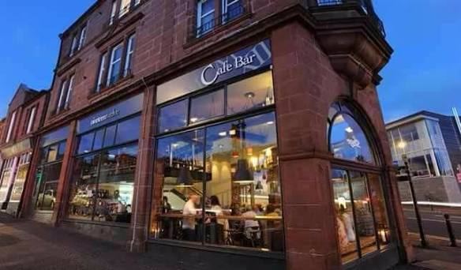
Cafebar 1912 · Bathgate
~14:00park
Park at Waverley
APCOA car park, New Street, EH8 8BH — right at the station for meeting them off the train.
Tight entrance and only ~15 min free, so you'll pay for the time parked. Buffer's there in case Glasgow snarls up.
15:30meet
Everyone meets at Waverley
The moment the two journeys join — Robert & Suzanne off the car, SO & Emily off the train. Bags in, four up.
~16:15arrive
Over the Forth to Aberdour — check in
About 30 minutes over the Queensferry Crossing to the house. Self check-in's open from 2pm, so The 1881 is ready when you get there.
Base camp · The 1881, Aberdour — five nights
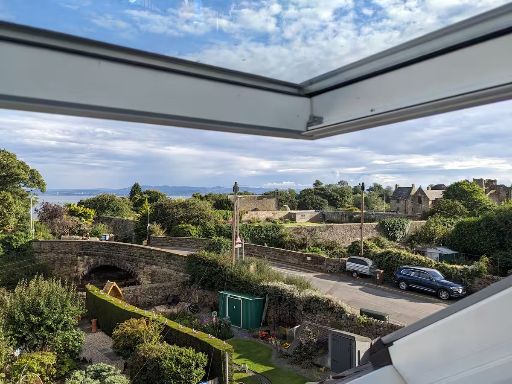
The view — over the old brig and out to the Forth
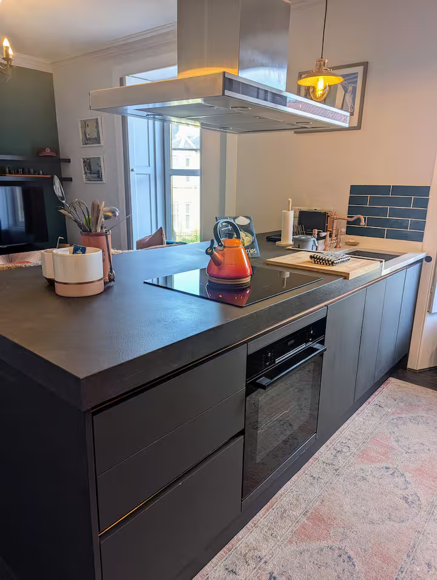
The kitchen
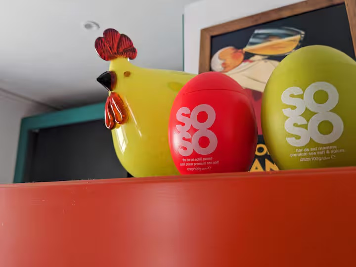
Even the salt's branded SO SO 👀
👀 Yes, that's real — the kitchen came stocked with SO SO sea salt. The house was apparently expecting one of us.
The four middle days, now firmed — a flexible city weekend, Loch Ness on Monday, and a second Edinburgh day on Tuesday.
The weekend · Sat 12 & Sun 13 — an interchangeable pair
One day Glasgow, one day Edinburgh — which lands on Saturday vs Sunday flexes around the football. Glasgow is fixed: it happens with or without a match.
Edinburghone of Sat / Sun
The Old Town classic
Edinburgh Castle
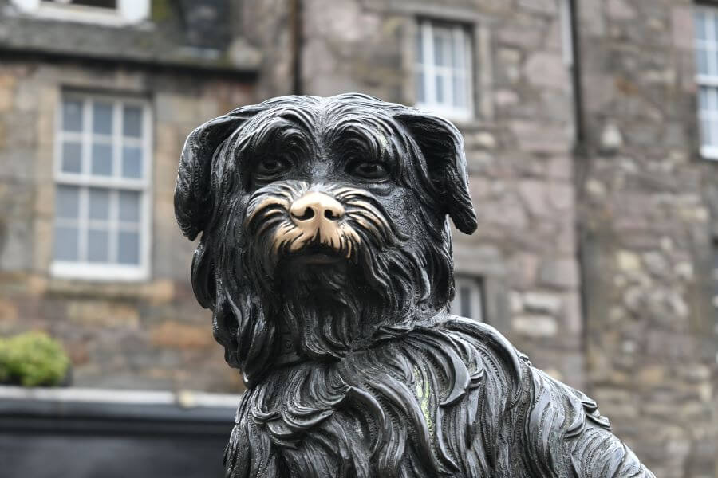
Greyfriars Bobby
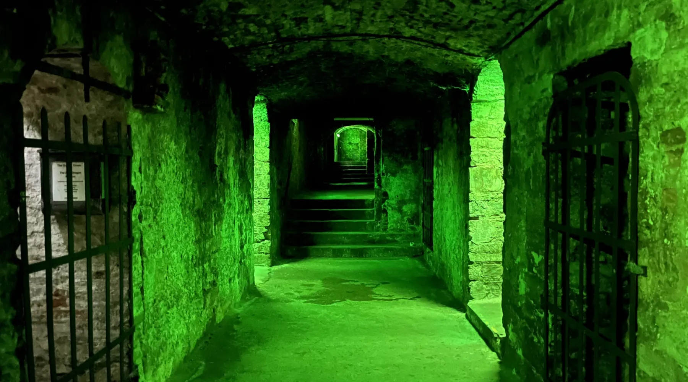
The vaults · ghost tourMountebank · comedy alt
Edinburgh Castle — pre-booked timed ticket, and the One O'Clock Gun
Down the Royal Mile
A rub of Greyfriars Bobby's nose for luck
A long lunch
An evening ghost tour of the closes & vaults — or the Mountebank comedy walk
Glasgowthe other day
West End & the city
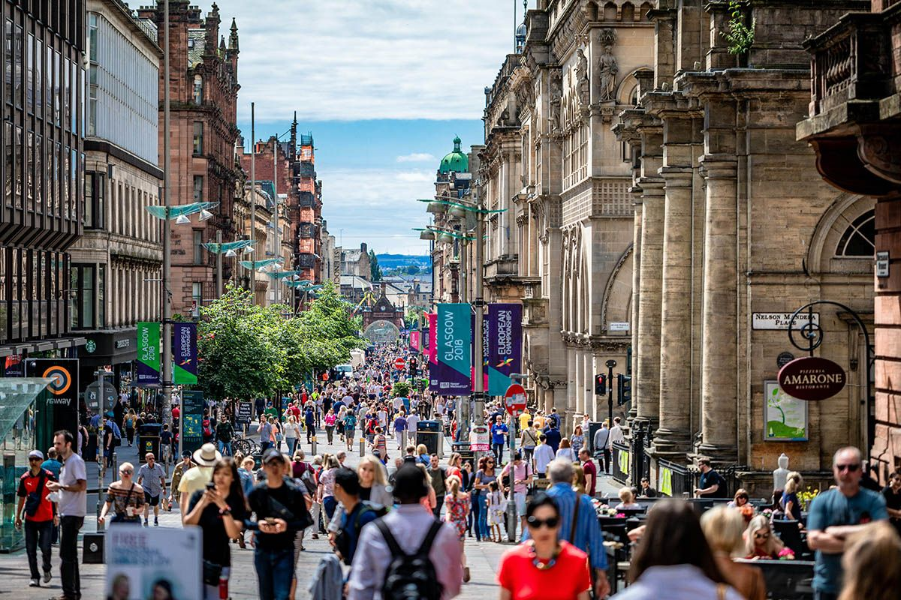
Buchanan Street
Kelvingrove Art Gallery — free, and brilliant
The Riverside Museum
The West End & Ashton Lane
George Square & the city centre
Glasgow Cathedral & the Necropolis
If a match is on, it anchors the day.
Match day · the variable
Premier Sports Cup quarter-final
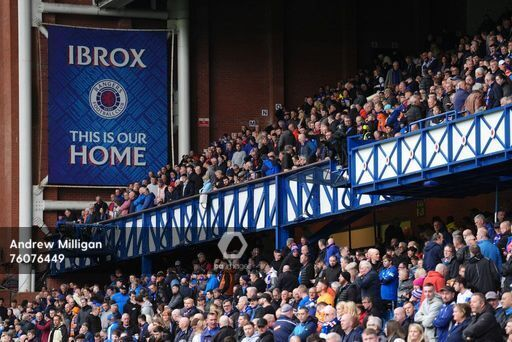
Ibrox · if it's a Glasgow tie
The quarter-final lands on this exact weekend (Sat 12 / Sun 13) — but the fixture isn't known until the last-16 is played (15–16 Aug) and the draw follows. If there's a tie worth travelling for, it drops onto the matching city's day: a Glasgow ground (Rangers at Ibrox) → the Glasgow day; Hearts or Hibs in Edinburgh → the Edinburgh day. We arrange the Sat/Sun order so the match day's city matches when the fixture is actually scheduled. If nothing appeals, the weekend's simply Glasgow + Edinburgh, no match.
📅 calendar nudge ~17 Aug — check the draw, grab tickets same-day.
Mon 14 · Loch Ness — fixed
A day's expedition
The Loch Ness monster day
A proper Highland day out, chasing the beast. Be honest about the distance, though: Loch Ness sits about three hours' drive north of Aberdour (~150 miles up the A9), so it claims a whole day — an early-ish start and an evening return. The drive through the Cairngorms is half the reward.
The classic stretch is the Urquhart Castle end near Drumnadrochit — a ruined castle on a headland over the loch's deepest, most-photographed water. Pair the castle with a boat and you've got the day. Three to weigh up:
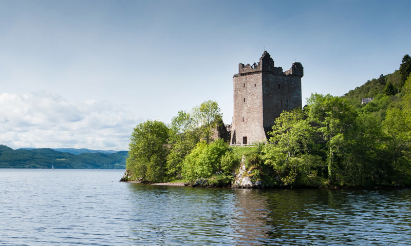
Loch Ness · Urquhart Castle
Our pick
Castle Cruises Loch Ness
Temple Pier, Drumnadrochit ~1 hr · 12 seats
Small skippered boat right under the castle — the closest and most personal. Tiny, so book ahead. lochnesscruises.com →
Loch Ness by Jacobite
Nr Inverness 1–3½ hr · big boats
The big, slick operator. Combo tickets bundle the cruise with Urquhart Castle and the visitor centre.
Cruise Loch Ness
Fort Augustus (south) ~50 min · live sonar
South-end departure with sonar screens on board — handy if we come at the loch from that side.
🔎 Open question: will SO manage to find out who actually owns the Loch Ness tour — the way he once went down the rabbit hole on who owns the Jack the Ripper tour? Some mysteries run deeper than the loch.
▸ This is the day — Monday's the pick: fresh legs after the weekend, and quieter midweek roads up and back.
Tue 15 · Edinburgh, take two — fixed
Tuesday 15 · Edinburghanchored by the workshop
Tweed, a royal yacht & a hill
Arthur's Seat · the view over Edinburgh
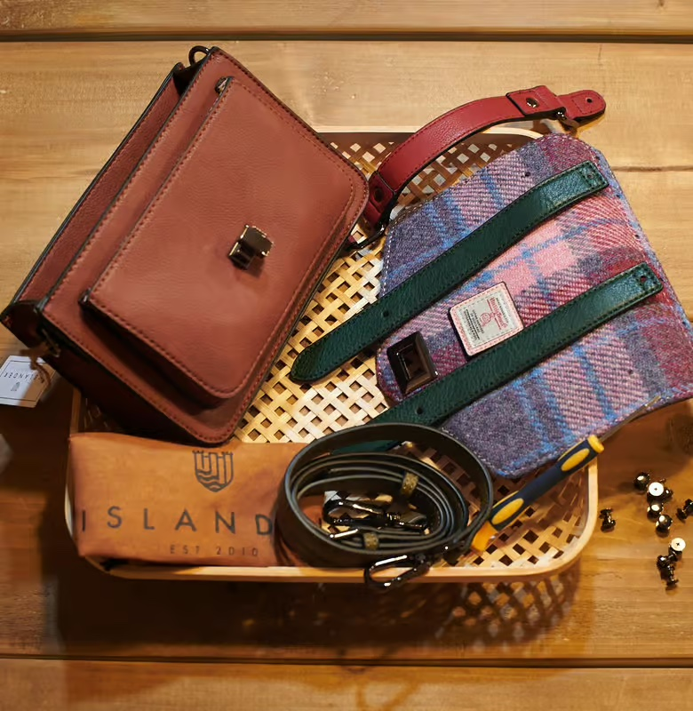
Islander tweed
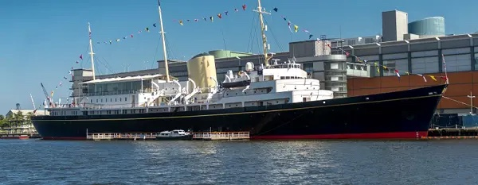
Britannia
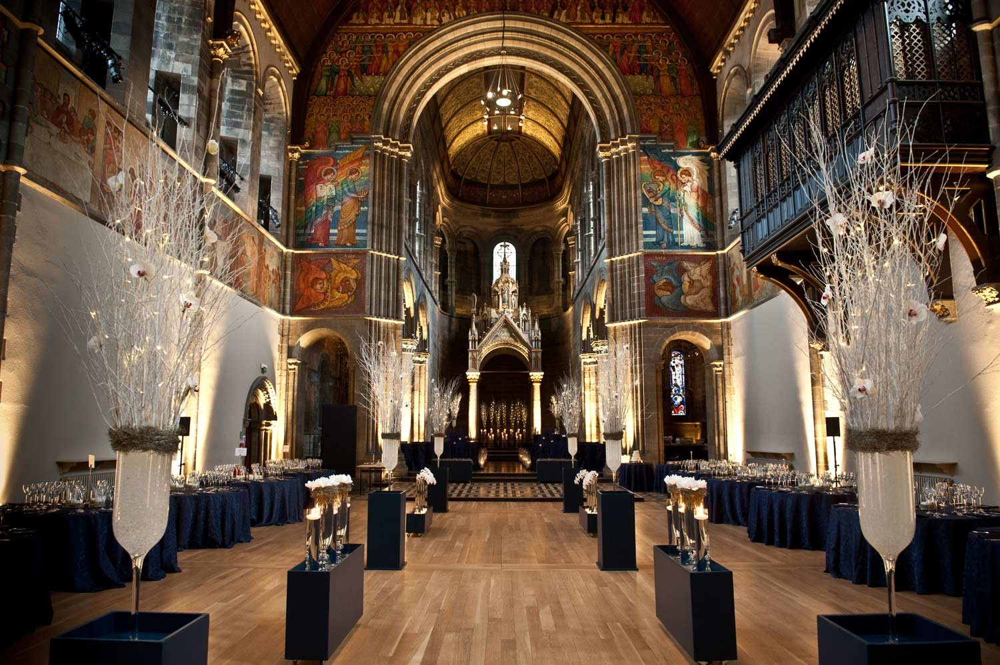
Mansfield Traquair
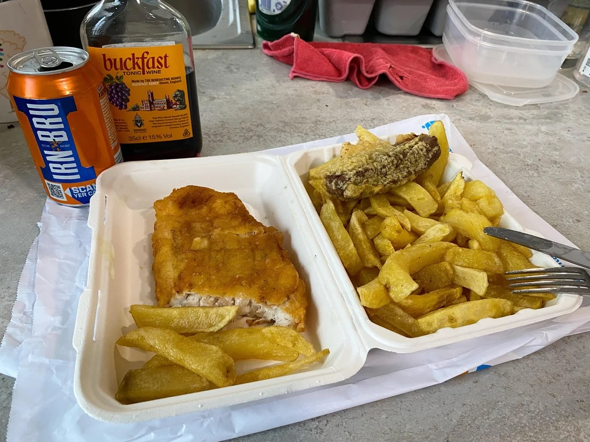
Cafe Piccante
Islander Harris Tweed handbag workshop on the Royal Mile — pick your cloth, make your own bag (book once dated)
Royal Yacht Britannia at Leith
Mansfield Traquair — the Phoebe Anna Traquair murals
Climb Arthur's Seat for the view over the city
Cafe Piccante — the best fish & chips, handy by Mansfield Traquair
⚠ Mansfield Traquair opens select days only — confirm the Sep 2026 dates before pinning; it may force the slot.
▸ edit this section in the repo — it's meant to grow
04
Wednesday 16 — onward to Crete
Out of the house, a shared run into Edinburgh, then the group splits for Crete by two different routes — and meets back up out there.
~09:00out
Away from Aberdour
Checkout's by 10:00, but we slip away earlier to make SO & Emily's onward train. Pack the car, lock up, back over the Forth.
~09:45drop
Drop SO & Emily at Waverley
Back to where it all started on Friday — drop them at the station, then you and Suzanne point for the coast. From here the routes split.
From here the routes split — both ending in Crete
SO & Emily · via York & London
Wed — Edinburgh → YorkAway early, into York before midday. Bags down, a gentle wander, a night there.
Thu — York → LondonDown to London in the morning (no need to rush), then across to Gatwick.
London → Crete ✈easyJet EZY8217, Gatwick → Heraklion, 16:45 → 22:45. See Crete & Travel.
Robert & Suzanne · via Belfast
~13:00 · CairnryanFrom Edinburgh down through Ayrshire, ~2¾–3 hours. A bite at the port before boarding.
15:30 · Sail to Belfast ⛴Stena Superfast VII, into Belfast 17:45 — booked.
The last leg, and the reunion: both parties fly into Heraklion on the Thursday — Robert & Suzanne from Belfast, SO & Emily from London Gatwick — and land at the same hotel in Sissi.
Same hotel, so everyone lands in the same place. The full door-to-door legs for both parties — flights, ferry and all — live on the Travel tab.
Every leg, in one place
Travel
All the flights and crossings for both parties — the same journeys woven through the itinerary, gathered here end to end. Booking references and payment details are deliberately kept off this public page.
Robert & Suzanne
Belfast → Aberdour → Crete · ferry, car & Jet2
To ScotlandFri 11 Sep
Belfast
07:30
Stena · Superfast VIII
⛴
2h15 · booked
Cairnryan
09:52
then ~2½ hr drive up to Aberdour, lunch at Bathgate
Back to BelfastWed 16 Sep
Cairnryan
15:30
Stena · Superfast VII
⛴
2h15 · booked
Belfast
17:45
To CreteThu 17 Sep
BFS
15:10
Belfast Intl
Jet2 LS321
✈
seats 16D · 16F
HER
21:55
Heraklion
Home from CreteThu 24 → Fri 25 Sep
HER
22:55
Heraklion
Jet2 LS322
✈
seats 16D · 16F
BFS
01:40+1
Belfast Intl
SO & Emily
Buffalo → London → Aberdour → Crete · American, BA & easyJet
Buffalo → LondonThu 10 → Fri 11 Sep
BUF
17:26
Buffalo
AA 4068
✈
American Eagle
BOS
18:56
Boston
— connect at Boston —
BOS
20:15
Boston
AA 108
✈
overnight
LHR
08:00+1
London Heathrow
Lands Heathrow Fri 11 morning.
London → EdinburghFri 11 Sep
London
—
from Heathrow
LNER · rail
🚆
~4h20
Edinburgh
~15:30
Waverley
Up from Heathrow to meet Robert & Suzanne at Waverley ~15:30.
Leaving EdinburghWed 16 → Thu 17 Sep
Edinburgh
Wed, early
Waverley
rail
🚆
~2h30
York
by midday
a night here
— night in York: bags down, a gentle wander —
York
Thu, am
no rush
rail
🚆
~2h
London
—
on to Gatwick
Into York before midday Wednesday for an easy afternoon, then down to London Thursday morning and across to Gatwick for the 16:45 Crete flight.
London → CreteThu 17 Sep
LGW
16:45
London Gatwick
easyJet EZY8217
✈
seats 9A · 9B
HER
22:45
Heraklion
Crete → LondonThu 24 → Fri 25 Sep
HER
23:40
Heraklion
easyJet EZY8218
✈
seats 9A · 9B
LGW
01:40+1
London Gatwick
London → BuffaloFri 25 Sep
LHR
13:45
London Heathrow
AA 6912
✈
by British Airways
PHL
16:40
Philadelphia
— connect at Philadelphia —
PHL
19:45
Philadelphia
AA 5819
✈
American Eagle
BUF
21:18
Buffalo
Tight one: the overnight from Crete lands Gatwick ~01:40, then it's a Gatwick → Heathrow transfer for the 13:45 home.
▸ booking references & payment details are deliberately kept off this public page
Where everyone's staying
Accommodation
The roof over our heads at each stop — base camp in Aberdour, the hotel out in Crete, and the night SO & Emily pick up in York on the way south (London the next day is just a hop through to Gatwick).
Aberdour · ScotlandFri 11 – Wed 16 · 5 nights
The 1881 — A Period Home
44 Main St, Aberdour, KY3 0UG
Whole place3 beds · 4 guestsSelf check-inHost: Jak
★★★★Bed & breakfast2 freshwater pools~5 min to Boufos beach
Both parties, same hotel — sea views, two big pools and a short stroll down to the village harbour. castellovillage.com →
Everyone
York · EnglandWed 16 · 1 night
A night in York
en route Edinburgh → London
To be booked
SO & Emily break the journey south here — away early Wednesday, into York before midday, bags down for a gentle wander round the city, then on to London (and Gatwick) the next morning.
SO & Emily
▸ York's SO & Emily's to book — drop the details in when it's set
How this page got made
The build
Every exchange that shaped this itinerary — each request, what changed, and the commit it landed in. It grows as we keep going.
Here's my repo — clone it (it's empty), copy index.html and README.md from my zip, commit them as "First draft of the Fife itinerary", push to main, then list the remote files.
Claude
A few things didn't match the brief, so I checked before acting: the files were actually in a zip in the working folder (not where described), the repo wasn't empty (it already had a starter file), and the active GitHub login only had read access.
So I cloned the repo, copied the two verified files in, committed, used the account that did have write access to push, listed the remote (index.html, README.md, opening.text), and left your setup as I found it.
02chat
You
I can log you in as the repo owner if needed — I'll switch accounts over.
Claude
No need — the push had already gone through on the right account, which was already logged in. Nothing to re-auth.
03chat
You
I've changed over the GitHub connector — you should be good now.
Claude
Set your account as the active one and confirmed it has full access, so pushes work straight from here now.
Add some possibilities: a Premier Sports Cup quarter-final that weekend (maybe Rangers or Hearts), Suzanne possibly climbing Arthur's Seat, and a handbag-making thing on the Royal Mile.
Claude
Added a "Still loose — possibilities" block to the days-in-between with three cards — framed as undecided, with no invented match, venue, or booking details.
Change the Friday food stop — not Ayr, we want Bathgate, The 1812. And the handbag place is Islander Harris Tweed.
Claude
Swapped the Ayr stop for The 1812 in Bathgate and moved its timing later to match (Bathgate is much nearer Edinburgh), named the handbag workshop, and updated the README to stay in sync.
Add the link for the 1881 at the end of the page. And we want a Loch Ness monster boat tour — how long to drive up, and some good options.
Claude
Found the real Airbnb listing (a same-named site that came up was a different place in the US), and added it to the Base camp card and the footer. Added Loch Ness as a possibility with the honest ~3-hour drive and three boat options.
Bring the page to life with photos and iconography — the ferry, the Bathgate restaurant, the 1881, and the Loch Ness day. Build up the Loch Ness copy and tour options too.
Claude
Checked how you wanted photos sourced ("whatever you recommend"), so: drew self-contained SVG icons and a custom Loch Ness illustration, added framed photo slots you fill with your own JPEGs from an /img folder, and expanded Loch Ness into a full feature with a three-way tour comparison.
Add an Itinerary / Build toggle at the top — the Build view should show every conversation here on one page.
Also: SO & Emily aren't flying, they're heading to York — find them a train around 10am or slightly earlier and drop them at Waverley.
And add a bit of humour: will SO find out who owns the Loch Ness tour, like he tried with the Jack the Ripper tour?
Claude
Built the toggle and this Build view — it logs each exchange and links to its commit. Reworked Wednesday: out of Aberdour a touch earlier, drop SO & Emily at Waverley for a morning LNER to York (~2h25), then Robert & Suzanne carry on to Cairnryan for the 15:30 sailing. And slipped a Nessie-ownership joke into the Loch Ness feature.
Quick correction — the Bathgate place is Cafebar 1912, not 1812. And here are real photos: Cafebar 1912, the 1881 (the kitchen, the view, and — uncannily — a tub of SO SO sea salt), Urquhart Castle for the Loch Ness day, and the Islander Harris Tweed bags.
Claude
Renamed it to Cafebar 1912 everywhere, added a third base-camp photo for the view and flagged the SO SO coincidence, and wired photo frames for the lot.
One catch: pasted images reach me as pictures, not files — so the frames stay as placeholders until the JPEGs are dropped into /img with the listed names.
Reframe the hero — it's me & Suzanne from Belfast; the others come from Buffalo via London. Everyone meets at Aberdour, then on to Crete. Show both journeys (one Aberdour, one Crete).
Add an evening ghost tour (preferred) or a Mountebank comedy walk, Edinburgh Castle, and the Royal Yacht Britannia. And are my photos actually connected?
Claude
Redrew the hero as two journeys converging on Aberdour and carrying on to Crete, with a little route-map and updated crew lines. Added Edinburgh Castle, a ghost-or-comedy evening tour (leaning ghostly), and the Royal Yacht Britannia at Leith.
Photos: sorted — you'd saved them in, I matched each to its slot, converted the AVIFs to JPEG and renamed them, so the frames are now live (no more placeholders). One thing still open: the Wednesday "back across" section still shows the old Belfast/York plan — that needs reworking for the Crete departure once we have the details.
For the Crete leg, separate routes — me & Suzanne via Belfast, SO & Emily via London, both meeting in Crete.
Claude
Reworked Wednesday into a shared morning (run into Edinburgh, drop SO & Emily at Waverley) and then two diverging tracks to Crete — SO & Emily via London, Robert & Suzanne via Belfast on the booked Stena crossing. The onward Crete flights are marked "to confirm" until the dates and airports are set.
Here are RR & SR's Jet2 flights and hotel to Crete (Heraklion) — Castello Village Resort, same hotel for both parties.
Also add Britannia (yes), Mansfield Traquair, a wee run of Greyfriars Bobby's nose, and the best fish & chips, Cafe Piccante.
Claude
Added a Crete section — the shared Castello Village Resort (Heraklion, 3★, Jet2holidays) and Robert & Suzanne's Belfast⇄Heraklion flights (out Thu 17 Sep), with SO & Emily's London flights marked to confirm. Britannia was already in; added Mansfield Traquair, Greyfriars Bobby and Cafe Piccante to the ideas.
I couldn't read the exact flight times and numbers off the booking screenshot, so those are flagged "to confirm" — send them over and I'll drop them in.
Here are SO & Emily's US⇄UK flights (American/BA) and their Crete flights (easyJet). Use it all to make the page flow better.
Bring in a third tab named TRAVEL — segment the travel into its own defined area, without removing it from the itinerary.
Claude
Added a Travel tab — a full door-to-door dossier of every leg for both parties: Robert & Suzanne's ferry + Jet2, and SO & Emily's Buffalo→Boston→Heathrow, Gatwick→Heraklion, and the way home. The itinerary keeps all its travel inline too.
Firmed up SO & Emily's confirmed easyJet flights (EZY8217/8218) in the Crete section and Wednesday track. Booking references and payment details deliberately left off — this repo is public.
Two map fixes: (1) Aberdour → Edinburgh in the title and route map — the base camp's in Aberdour, but to everything else it's Edinburgh.
(2) We don't go Aberdour→Crete directly: SO & Emily go back to London then Crete; RR & SR go back to Belfast then Crete. Make it visually correct.
Claude
Renamed the hub to Edinburgh in the title, route map and crew lines (Base camp stays Aberdour). Redrew the map as a converge-then-diverge: both parties meet at Edinburgh, then split back out through their own hub — SO & Emily via London, Robert & Suzanne via Belfast — before reuniting in Crete.
R&S Jet2 flights confirmed (LS321/LS322). Add SO & Emily's Heathrow → Edinburgh train, and the way back Edinburgh → York → London Stansted. Build a 4th Accommodation tab (the 1881, Castello Village Resort in Sissi, plus York & London).
And on the map — why London & Belfast twice? Show the return as a parallel line and a looping curve to Crete.
Claude
Locked in R&S's LS321/LS322. Added the inbound Heathrow→Edinburgh train and the Edinburgh→York→London return across the Travel tab and Wednesday. Built the Stay tab — the 1881, Castello Village Resort in Sissi (4★, B&B, 7 nights), and York/London as to-be-booked.
Redrew the map your way: each city once, a parallel "back" line to each hub, then a looping curve from London and Belfast on to Crete. Good call — it's cleaner.
Timing fix for SO & Emily: leave Edinburgh early Wednesday, into York before midday, drop bags and a gentle sightsee, then down to London the next morning (no need to be crazy early). Rating ★★★★ is good. And here are the Castello photos.
Claude
Sorted the timing — York is now the single overnight (early Wed, in before midday, easy afternoon), London just a relaxed hop through to Gatwick on Thursday. Updated the Wednesday track, the Travel tab, and the Stay tab (dropped the spare London booking). Dropped your three Castello photos in — the Crete section now has a little gallery (pool, terrace, sea-view room) and the Stay card shows the pool.
Made a wee brass ferry on a harbour-navy tile — a self-contained SVG favicon that stays sharp right down to 16px. Wired it into the page with a matching theme-colour for mobile browser chrome.
Recast "the days in between" — the four middle days are firmed now. A flexible Glasgow/Edinburgh weekend (order flexes around the football), Loch Ness Monday, Edinburgh #2 Tuesday. Fold the possibilities into their days; drop the Fife coast and Stirling/Kelpies. No green-and-gold anywhere.
Claude
Recast the whole section into committed day plans: the interchangeable weekend pair (Edinburgh Old Town + Glasgow West End) with the football logic and a ~17 Aug ticket-draw nudge; Loch Ness committed to Monday; and a Tuesday Edinburgh day anchored by the tweed workshop (Britannia, Mansfield Traquair, Arthur's Seat, Cafe Piccante, with the select-days flag). Folded the old possibility cards into their days, dropped the coast and Stirling/Kelpies. Kept to the existing navy/brass/tide palette — no green-and-gold.
[ photos for the day cards — Edinburgh Castle, Greyfriars Bobby, the vaults, the Mountebank guide, Glasgow, Ibrox, Arthur's Seat, Britannia, Mansfield Traquair, the chippy ]
Claude
Brought the day plans to life with your photos: a 2×2 strip on the Edinburgh weekend card (Castle, Greyfriars, vaults, Mountebank), Buchanan Street on Glasgow, Ibrox on the match-day card, and a gallery on the Tuesday card led by the Arthur's Seat view (tweed, Britannia, Mansfield, the chippy). Converted the webp/avif ones to JPEG and kept everything in the same navy/brass/tide frames.
The itinerary shouldn't kick off Friday — that's when Suzanne & I come into it. SO & Emily start on Thursday, so that should come first. It should read by time, like a timetable, right?
Claude
Right — rebuilt the Itinerary as one chronological run. New opener Thursday 10 (SO & Emily fly Buffalo→Boston→London overnight); Friday 11 now shows both parties converging at Waverley (their Heathrow landing + train woven in beside the ferry), with base camp folded in as the check-in; then the days, Wednesday's split, and Thursday 17 as the flight into Crete. Folded the Stena timetable into Friday's ferry leg and dropped the separate Sailings section.
Booked the sailings — Stena Superfast VIII out (Fri 11, 07:30), Superfast VII back (Wed 16, 15:30), car + two adults, Stena Plus. [ booking ref & reg supplied ]
Claude
Marked the ferries as booked across Friday, Wednesday and the Travel tab — ship names in (Superfast VIII / VII), the Stena Plus lounge noted, and the real car check-in window (closes 45 min before, so ~06:15 at Belfast). Kept the booking reference and the car reg off the page — public repo.
22latest
You
Those hero cards feel redundant now — drop them, or bring in some highlight "card" dates and times?
Claude
Repurposed rather than dropped — they were a good anchor but only framed Friday. Now they're the trip's three pivots at a glance: Trip begins (Thu 10, SO & Emily out), Everyone meets (15:30 Waverley, Fri 11), and Onward to Crete (Thu 17). Earns its place across the whole timeline instead of repeating one day.
▸ this log grows by hand each time we change something — newest at the bottom